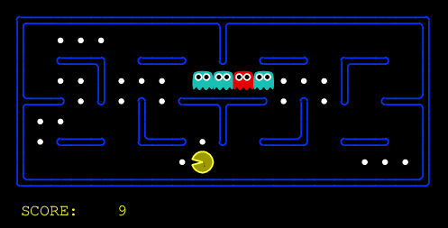
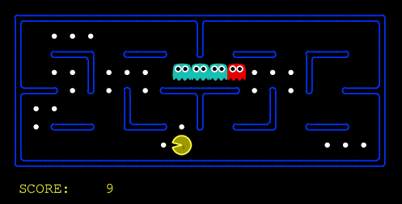
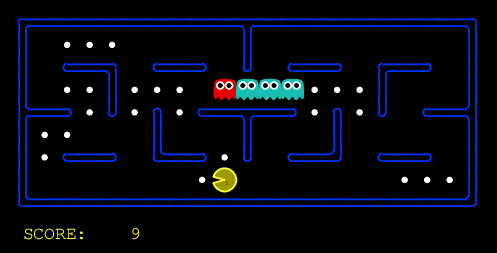

For each scenario of the small layout, we randomly selected three games out of one hundred, that are played back to back.
For one directional ghost and three random ghosts

Without any advice

With both advice

With only selection advice
With only simulation advice